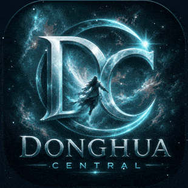
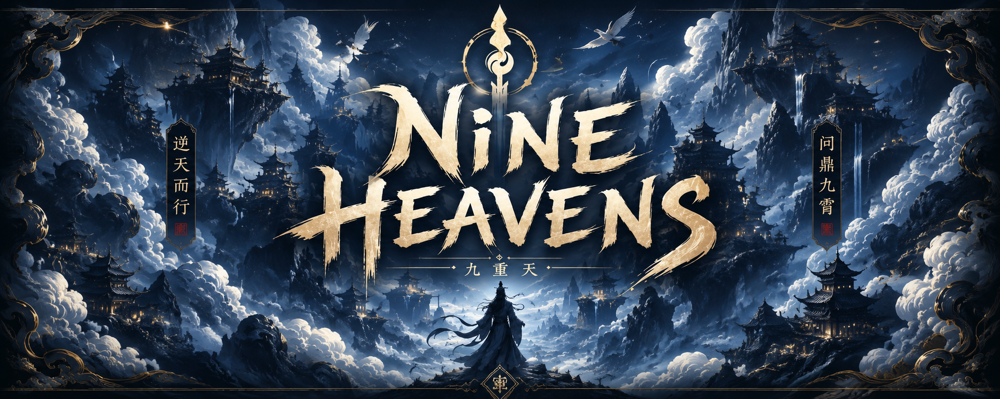

Translate
English scripts are prepared for meaning, flow, names, realms, and context.

Donghua Central Join DiscordYour ultimate hub for
Handcrafted English subtitles, fast episode updates, deep series discussions, novels, audiobooks, art channels, and the Nine Heavens cultivation system in one active Discord realm.
Subtitle Standard
English scripts are prepared for meaning, flow, names, realms, and context.
Dialogue is cleaned for readability without flattening the cultivation flavor.
Cues are synced and paced so episodes feel smooth from opening to ending.
Signs, styles, and final checks keep releases polished before they go live.

Community Preview
Episode release channels, recommendations, novel resources, reactor support, artwork galleries, events, giveaways, and moderation all sit beside active donghua conversation.
Featured Library
A mix of staff picks and community favorites: ongoing cultivation staples, massive fantasy worlds, and titles that keep discussion channels alive.
 01
01
 02
02
 03
03
 04
04
 05
05
 06
06
About Nine Heavens
Deep in the mortal realm, cultivators chase the same dream: ascend through the Nine Heavens and become something more than human.
Nine Heavens is a persistent, server-wide cultivation RPG inspired by Xianxia novels. Progress through cultivation stages from the lowly Mortal ranks through Mahayana, Immortal, and Sovereign, earning combat stats, unlocking flames, and breaking through realms at the risk of injury or demotion if heavenly tribulations crush your attempt.
Every breakthrough can raise your legend or send you back wounded.

Grow Qi, equip weapons, armor, and accessories with set bonuses and grade mastery, then challenge other players in PvP for glory and rewards.
Hunt monsters, hatch and combine eggs, and raise a beast companion whose stats scale with your bond and its rarity.
Swallow flames to boost your cultivation, refine pills, and unlock rare crafting bonuses for the long climb upward.
Manage inventory and storage rings with real weight limits, open chests and mystery boxes, and route overflow loot when your ring runs full.
Trade with spirit stones and martial wealth through a live escrow-backed auction house with automatic refunds and taxes on outbid offers.
Grind toward Sovereign, chase perfect quest rewards, and leave your mark inside a cultivation world that keeps moving with the server.
Realm Codex
1st - 9th Stage
1st - 9th Stage
Early, Middle, Late, Peak
Early, Middle, Late, Peak
Early, Middle, Late, Peak
Early Soul Transformation, Void Refinement, Spirit Severing, Peak Soul Transformation
Body Mahayana, Soul Integration, Dao Integration, Peak Mahayana
True Immortal, Golden Immortal, Immortal King, Immortal Emperor
Celestial Sovereign, Primordial Sovereign, Ancestral Sovereign, Heaven Dao Sovereign, Unknown
Staff
Developers, moderators, subtitle makers, archivists, event helpers, and discussion voices all keep Donghua Central moving.
FAQ
Yes. Donghua Central subtitles are created by the team and are not copied from other groups.
Yes. Members can access subtitle releases through the server.
New episodes go live after translation, editing, timing, typesetting, and quality checks are finished.
Yes. Translators, editors, timers, typesetters, and quality checkers can apply to help the team.
Join the Discord and follow the Nine Heavens channels for bot instructions, systems, and updates.
Become a Cultivator
Follow subtitle releases, episode discussions, Nine Heavens updates, events, recommendations, reactor channels, novels, audiobooks, and art resources in one place.